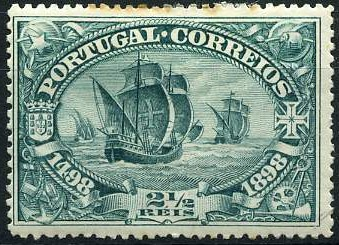
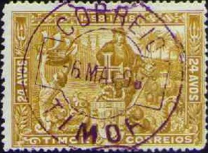
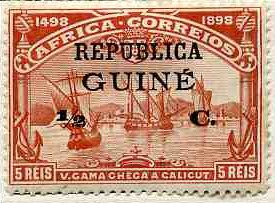
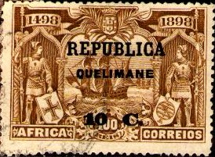
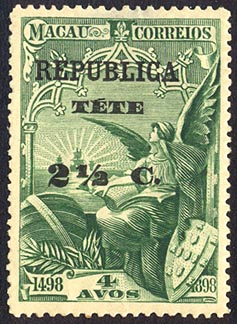

Return To Catalogue - Portugal
Note: on my website many of the
pictures can not be seen! They are of course present in the
catalogue;
contact me if you want to purchase the catalogue.
Vasco da Gama discovered the way to India by sea in 1898. On 20 Mai 1898 he reached Calicut in India. To commemorate this, many stamps were issued in Portugal and various Portuguese colonies.
Many Portuguese colonies issued stamps in the Vasco da Gama design; The following colonies issued stamps with this design Angola (overprints on Portuguese Africa, Macao and Timor), Azores, Cape Verde (overprints on Portuguese Africa, Macao and Timor), Inhambane (overprints on Portuguese Africa, Macao and Timor), Lorenzo Marques (overprints on Portuguese Africa, Macao and Timor), Macao (different currency), Madeira, Mozambique (overprints on Portuguese Africa, Macao and Timor), Portuguese Africa, Portuguese Congo (overprints on Portuguese Africa, Macao and Timor), Portuguese Guinea (overprints on Portuguese Africa, Macao and Timor), Portuguese India (different currency), Quelimane (overprints on Portuguese Africa, Macao and Timor), St Thomas and Prince (overprints on Portuguese Africa, Macao and Timor), Tete (overprints on Portuguese Africa, Macao and Timor) and Timor (currency in 'AVOS').
In Mozambique Company the current arms stamps (with elephants) were overprinted '1498 Centenario da India 1898'.
2 1/2 r green 5 r red 10 r lilac 25 r green 50 r blue 75 r brown 100 r brown 150 r brown


(Portuguese India, other currency)



(Macao, other currency 'AVOS')




(Reduced sizes)
(Mozambique company issue: different design)


{kind=link}
{kind=link}